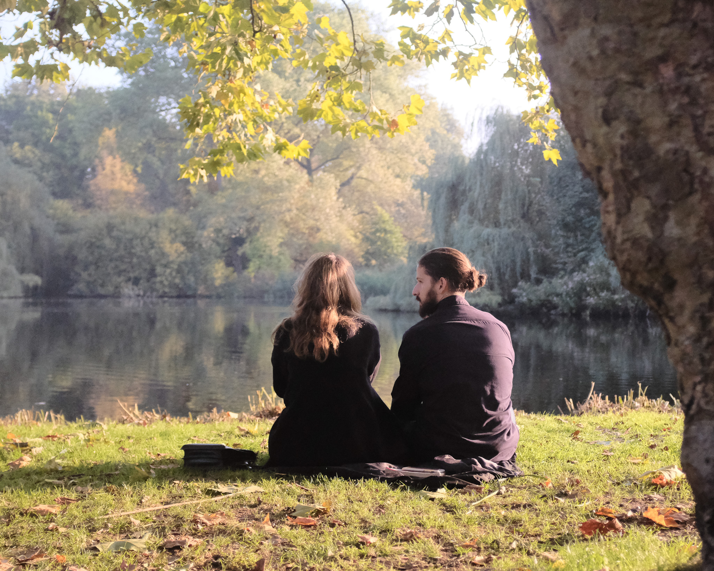
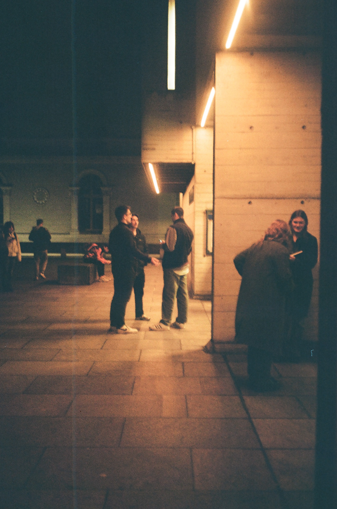
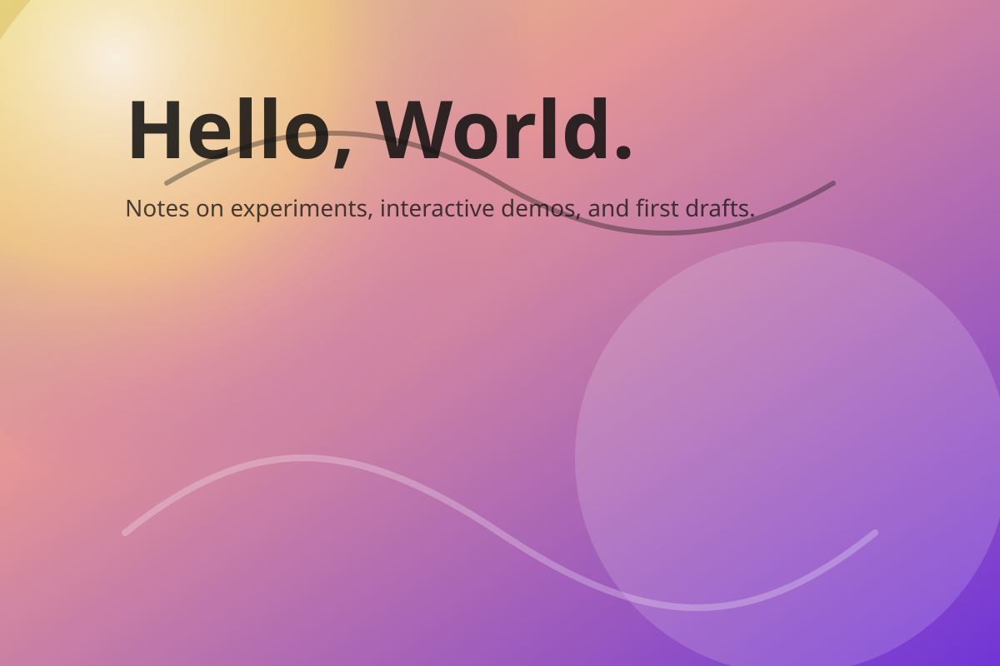

Is the cognitive limit on social relationships a real biological constraint or a statistical artifact? It's been several years since a colleague shared an intriguing paper with me. Having previously worked in telecom data analysis, I was immediately drawn to their approach of using mobile phone call data to investigate Dunbar's social layers theory. But as I read through their methodology, something didn't quite add up.

LLMs are collapsing development costs and inviting domain experts to become technical founders.
Is the cognitive limit on social relationships a real biological constraint or a statistical artifact?
Interactive charts exploring affordability, inflation, and wages in the Irish housing market.

A first post with an embedded interactive component — welcome to the new site.